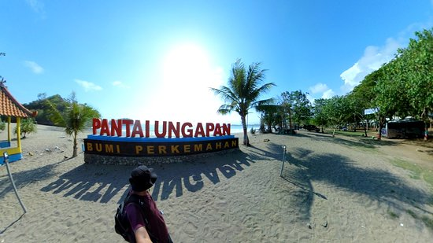

Pantai Ungapan adalah sebuah pantai di pesisir selatan atau berada di Samudra Hindia, di mana secara
administratif masuk Desa Gajahrejo, Kecamatan Gedangan, Kabupaten Malang, Jawa Timur.[1] Letak pantai
ini berdekatan dengan Pantai Bajulmati. Pantai ini berjarak sekitar 64 km dari Kota Malang dan dibutuhkan
sekitar 3 jam perjalanan untuk mencapainya. Jika dari Kota Malang Anda bisa mengambil arah ke Turen lalu berbelok
ke selatan menuju Sumbermanjing Wetan dan lurus menuju arah Pantai Sendangbiru. Jalannya sudah beraspal mulus tetapi
berkelok-kelok karena harus melewati pegunungan. Tidak jauh sebelum memasuki Pantai Sendangbiru terdapat sebuah pertigaan
Jalan Lintas Selatan (JLS) dan sudah ada plakat petunjuk arah bila berbelok ke kiri akan menuju Pantai Sendangbiru, sedangkan
bila berbelok ke kanan akan menuju Pantai Bajulmati dan Pantai Goa China. Dari pertigaan itu, Anda berbelok ke kanan dan terus
mengikuti jalan tersebut sampai menemui jembatan Bajulmati. Jika telah tiba di jembatan ini, artinya telah dekat dengan Pantai Ungapan.
Setelah melewati Jembatan Bajulmati kita akan menemukan jalan menuju Pantai Goa China. Setelah sekitar 10 menit kemudian sampailah Anda di
Pantai Ungapan. Dari jembatan tersebut, lurus saja mengikuti jalan dan tidak jauh kemudian kita akan menemukan papan petunjuk arah yang
bertuliskan ke kiri menuju Pantai Ungapan. Bila lurus Anda akan menuju Pantai Bajulmati. Selama menempuh perjalanan ini, Anda harus tetap
berhati-hati karena jalannya berkelok-kelok dan berada di sisi jurang. Alternatif jalan lainnya, Anda bisa juga dengan melalui jalur menuju
Pantai Balekambang meskipun akan lebih jauh. Yaitu dengan menuju arah Pantai Balekambang sampai terdapat sebuah perempatan, bila lurus akan menuju
Balekambang dan jika ke kiri akan menuju Bajulmati dan Ungapan. Rutenya masih satu jalur dengan Pantai Goa China yang berjarak sekitar 10 menit dari
Pantai Goa China.
Pantai Ungapan memang terletak bersebelahan di antara Pantai Goa China dan Pantai Bajulmati. Pantai Ungapan sebenarnya masih satu garis dengan Pantai
Bajulmati. Namun karena Pantai Bajulmati sangat panjang sehingga akhirnya dibagi menjadi beberapa pantai yaitu Pantai Ungapan dan Pantai Jelangkung.
Saat ini Pantai Ungapan dikelola oleh Perum Perhutani. Nama Ungapan berasal dari Bahasa Jawa yang berarti muara sungai atau pertemuan antara sungai dan
laut. Di pantai ini memang terdapat sebuah muara yang biasanya dipergunakan untuk berenang oleh para wisatawan yang datang.